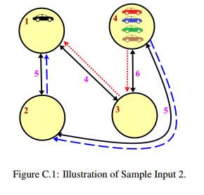

你现在要为智能汽车负责设计一种很高级的集中管理系统。目的是利用全球信息指导早上从郊区赶往市中心的乘客如何在避免交通堵塞的情况下更好地到达城市中心。
不幸的是，乘客们对城市非常了解，而且都相当自私，你不能简单地甩给他们一条比平常走的还要长的路径（否则他们会直接无视你的指导），所以只能说服他们改走另外一条长度相同的路径。
城市的道路网络由路口和连接它们的双向道路组成，通过不同的道路所需时间是不同的。所有乘客都会从各自的路口出发，当然不同的乘客出发的路口可能不同。但是所有乘客都会在同一个地点结束他们的旅程，那就是位于路口1的市中心。如果两个乘客试图在相同的时间，从同一方向，开始沿着相同的道路移动，就会出现堵塞——这是你必须避免种情况的。但是，两名乘客可以在同一时间通过同一个路口，或者在不同时间从同一条道路沿同一方向出发。
请确定最多能有多少人能够在没有堵塞的前提下开车前往市中心。注意，所有乘客刚好在同一时间从他们所在路口出发，而且乘客只会走能够最快到达路口1的路径。

在图C.1中，汽车图案标记了每名乘客最开始所在的路口，其中一辆车已经在市中心了。而路口4的车辆，可以走通过路口3的红色的点线，或者通过路口2的蓝色虚线。但是剩下的两辆车不可能在避免堵塞的前提下前往市中心。所以，在避免堵塞的情况下，最多只有3辆车能够抵达位于路口1的市中心。